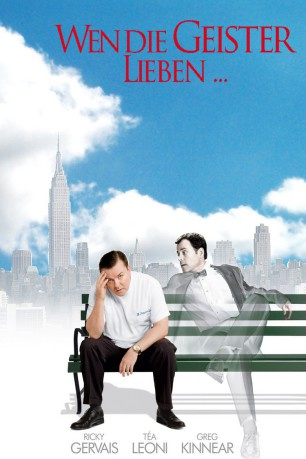
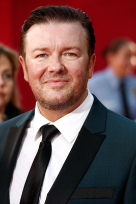
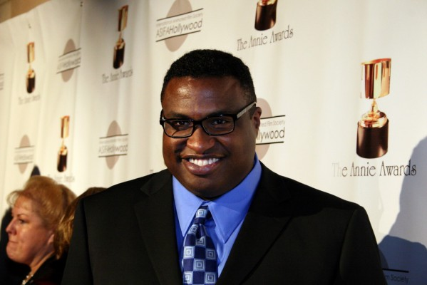

#6263 Wen die Geister lieben
Alternativ: Ghost Town
 
 IMDB-Wertung: 6.7 / 10
IMDB-Wertung: 6.7 / 10  Metascore: 0
Metascore: 0 
Menschen erträgt Zahnarzt Dr. Pincus am besten, wenn er sie bei der Behandlung kurzfristig verstummen lassen kann. Nach einer Operation, der er sich unterziehen musste, ist es mit der Ruhe vorbei. Plötzlich sieht er Geister, die Hilfe einfordern. Der lästigste ist Frank, der seine Witwe nicht in eine neue Ehe ziehen lassen will. Pincus willigt ein, diese Beziehung zu sabotieren, sich Gwen selbst als Lover zu offerieren.
Jahr: 2008
Dauer: 102 Minuten
FSK:
Land: USA Studio: Paramount PicturesTonspuren: DTS - ,
Untertitel: Deutsch,
Auflösung: 1080p (1920x1080) Größe: 9318 MB
Genre: Drama, Komödie, Fantasy, Liebe
Regisseur: David Koepp
Drehbuch: Ahmed Dramé
Soundtrack:
Darsteller:
 Greg Kinnear als Frank
Greg Kinnear als Frank- Jordan Carlos als Young Husband
- Dequina Moore als Young Wife
- Brian Hutchison als Accident Bystander
- Julia Murney als Sneezy Lady
-  Ricky Gervais als Pincus
- Claire Lautier als Upper East Side Lady
 Aasif Mandvi als Dr. Prashar
Aasif Mandvi als Dr. Prashar- Raymond J. Lee als Greenpeace Guy
 Téa Leoni als Gwen
Téa Leoni als Gwen Kristen Wiig als Surgeon
Kristen Wiig als Surgeon- Aaron Tveit als Anesthesiologist
- Deborah S. Craig als Nurse
- Betty Gilpin als WWII Nurse
- Alan Ruck als Ghost Dad
 Brian Tarantina als Ghost Cop
Brian Tarantina als Ghost Cop- Darren Pettie als Construction Worker Ghost
- Jesse Means als Construction Worker Ghost
 Robert Kelly als Construction Worker Ghost
Robert Kelly als Construction Worker Ghost-  Michael-Leon Wooley als Hospital Lawyer
- Monte Bezell als Cab Driver
 Sebastian La Cause als Bartender
Sebastian La Cause als Bartender Dana Ivey als Marjorie Pickthall
Dana Ivey als Marjorie Pickthall- Miles Grose als Night Doorman
- Jeff Hiller als Naked Guy
- Raymond McAnally als Assorted Ghost
- Amy Van Nostrand als Assorted Ghost
- Ira Hawkins als Assorted Ghost
 Danai Gurira als Assorted Ghost
Danai Gurira als Assorted Ghost Richard O'Rourke als Man at Lecture
Richard O'Rourke als Man at Lecture Brian d'Arcy James als Irish Eddie
Brian d'Arcy James als Irish Eddie Billy Campbell als Richard
Billy Campbell als Richard- Phoenix als Leonard
- Lisa Datz als Happy Person in Bar
- James Ludwig als Happy Person in Bar
- Melissa Thomas als Dr. Prashar's Patient
- Megan Byrne als Mrs. Pickthall's Daughter
 José Ramón Rosario als Crane Operator
José Ramón Rosario als Crane Operator- Dylan Clark Marshall als Little Alex
- John Ahrens als Jogger Ghost , uncredited
- Celia Allen als Upper East Side Shopper , uncredited
- Ezie Cotler als Ghost , uncredited
- Nicky Julius als Orderly , uncredited
- RJ Konner als Black Tie Guest , uncredited
- Annie Rohling als Accident Bystander , uncredited
- Christina Russo als Elevator Ghost , uncredited
- Kent Sladyk als Museum Exhibit Patron , uncredited
- Joseph Badalucco Jr. als Accident Bystander
- Tyree Michael Simpson als Sneezy Cop
- Bridget Moloney als Receptionist
Datei: X:\2008(N-Z)\Wen die Geister lieben (2008, FSK, 1920x1080).mkv seit 23.05.2017
Festplatte: HD 2008(G-Z)-2009(A-F)
 Es gibt insgesamt 91 Filme in der Gruppe '2008(N-Z)'
Es gibt insgesamt 91 Filme in der Gruppe '2008(N-Z)'